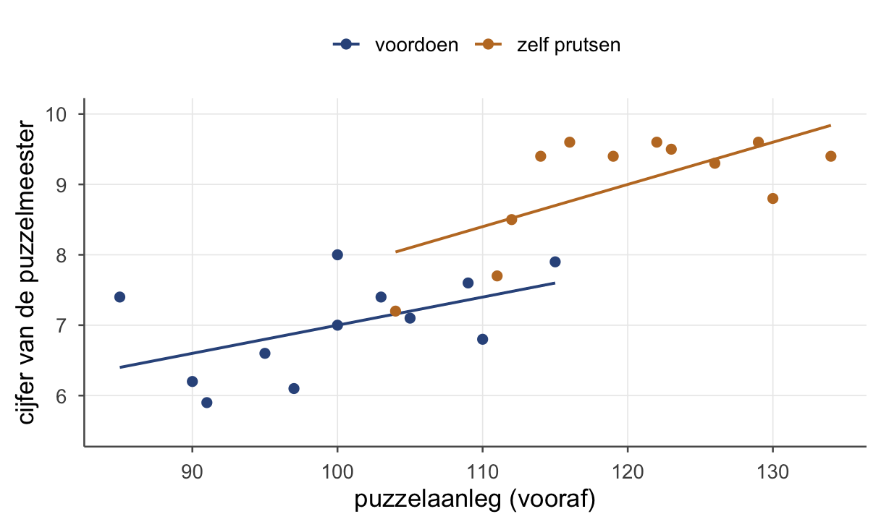
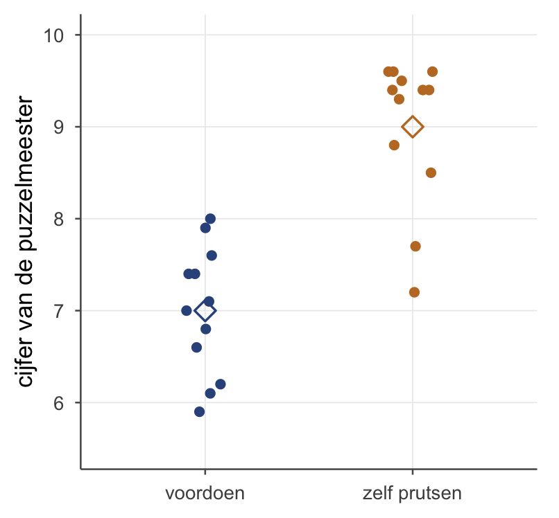
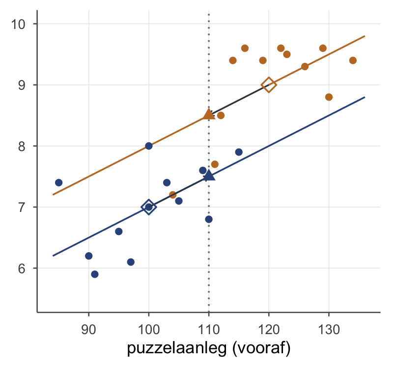
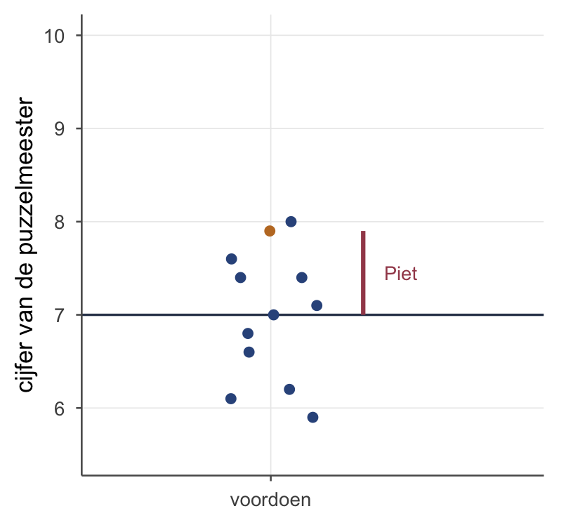
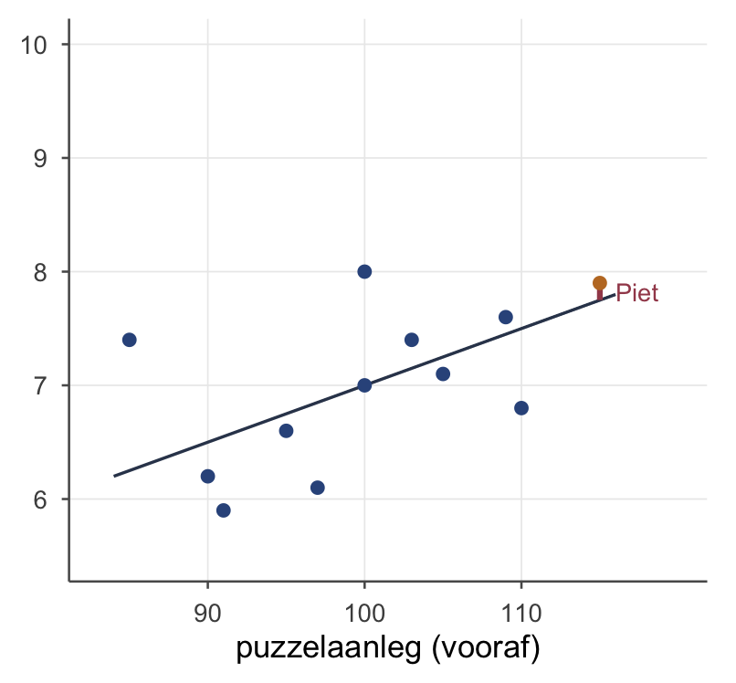
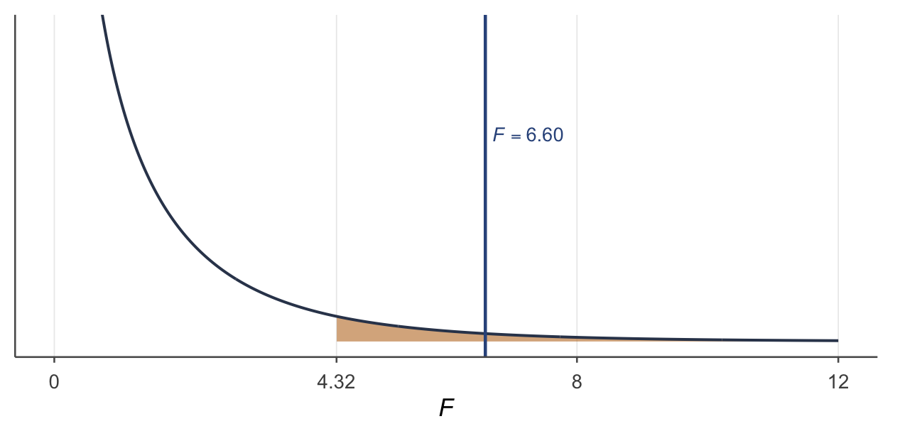

Thema 9 · ANCOVA
Deel 4 · Regressie · de covariaat peuzelt de error op
De puzzeldozen
In het oostelijke bos zat elke ochtend een oude raaf op dezelfde tak, met een puzzeldoos tussen zijn poten. Hij deed het voor: klepje, haakje, draaien, en daar rolde de noot. De jonge raven keken.
In het westelijke bos was geen oude raaf. Daar lagen de dozen gewoon op het mos, en de jongen prutsten.
Na drie weken kwam de puzzelmeester langs met zijn cijferlijst. De westelijke jongen kregen gemiddeld een 9. De oostelijke een 7. “Zelf prutsen wint,” zei iemand.
Dat is de conclusie waar dit thema niet in trapt.
Wat je al kent
Twee dingen, en ANCOVA is niets anders dan die twee in één model:
- De eenweg-ANOVA (thema 3): een groepsindeling, nominaal, en een continue uitkomst. Je vergelijkt gemiddelden met een F: het signaal tussen de groepen gedeeld door de ruis erbinnen.
- Regressie (thema 7 en 8): een continue voorspeller en een continue uitkomst. Je legt een lijn, en de helling zegt hoeveel de uitkomst verandert per eenheid van de voorspeller.
Wat als je allebei hebt? Minstens één groepsindeling én minstens één continue voorspeller, en een continue uitkomst. Dan is het een ANCOVA, analysis of covariance. De groepsindeling heet nog steeds de factor. De continue voorspeller heet nu de covariaat.
Ik schrijf het als een pijl, met links wat voorspelt en rechts wat voorspeld wordt:
| wat voorspelt | uitkomst | analyse | ||
|---|---|---|---|---|
| nominaal | methode | → | cijfer | eenweg-ANOVA |
| nominaal en interval | methode en aanleg | → | cijfer | eenweg-ANCOVA |
Let op het woord eenweg: dat telt de factoren, niet de covariaten. Aan het woord ANCOVA hoor je niet hoeveel covariaten erin zitten, en ook niet hoeveel factoren. In dit vak is het altijd één factor en één covariaat.
Appels met peren
Terug naar de puzzelmeester. Zet de cijfers naast elkaar en je ziet het meteen: de westelijke raven scoren 2 punten hoger. Een onafhankelijke t-toets (thema 1) zegt dat dat geen toeval is, t(22) = −6.50, p < .001. Klaar?
Nee. Want de twee bossen zijn bestaande groepen. Niemand heeft de jonge raven geloot over oost en west; ze zaten er al. En toen de puzzelmeester zijn aantekeningen van vóór de training erbij pakte, stond daar iets ongemakkelijks: de westelijke jongen waren vooraf al handiger. Op de puzzelaanleg-toets scoorden ze gemiddeld 120, de oostelijke 100.
Dan zijn we appels met peren aan het vergelijken. De westelijke raven scoren misschien hoger door het zelf prutsen, misschien door hun aanleg, en waarschijnlijk door allebei. Dat de groepen vooraf al verschillen op iets wat met de uitkomst samenhangt, heet systematische bias. Die term gebruikt het college ook.


Kijk naar het rechterpaneel. Binnen elk bos loopt een lijn omhoog: wie meer aanleg heeft, krijgt een hoger cijfer, in het oosten én in het westen. En de twee wolken staan naast elkaar op de aanleg-as. Dat is precies de situatie waar het college bij zegt: “Hierdoor kunnen als het ware ‘appels met appels’ vergeleken worden.” Hoe, dat zie je zo.
Twee controles vóór je corrigeert
Een goede onderzoeker vertrouwt niet alleen op zijn gevoel maar kijkt ook naar de data, zegt het college. Twee vragen, allebei met een toets die je al kent:
- Verschillen de groepen op de covariaat? Dat is een onafhankelijke t-toets (of een eenweg-ANOVA) met de covariaat als uitkomst. Even verwarrend, want de hoofdvraag gaat over het cijfer; maar hier is aanleg even de afhankelijke variabele. Bij de raven: ja, 120 tegen 100, en de verdelingen in het rechterpaneel laten het zien.
- Hangt de covariaat samen met de uitkomst? Dat is een Pearson-correlatie (thema 7). Bij de raven r = .84 over alle raven samen, en binnen de groepen r = .59.
Is het antwoord op vraag 2 nee, dan valt er niets te corrigeren. Als de covariaat de lengte van je schoenveter was: die heeft niets met het cijfer te maken, dus corrigeren verandert niets. Een covariaat moet co-variëren, samenhangen met de uitkomst. Daar komt het woord vandaan.
Twee redenen voor een covariaat
Het college noemt drie redenen om een covariaat toe te voegen. Ik noem er twee, want de derde (alternatieve verklaringen uitsluiten) is de eerste in een causaal jasje: een alternatieve verklaring voor een verschil is precies een variabele waarop de groepen vooraf al verschillen en die met de uitkomst samenhangt. Werkgroep 9 vraagt ook om twee. Vraagt een tentamen naar de redenen van het college, noem dan alle drie: de derde is dan alternatieve verklaringen uitsluiten. Dit zijn de twee.
Reden 1 · Systematische bias wegcorrigeren
Dat is het verhaal hierboven. De groepen verschillen vooraf al op iets dat met de uitkomst samenhangt, en je wilt weten wat het college zo opschrijft: “wat zou het verschil in gemiddelden zijn als alle groepen gemiddeld gelijk zouden zijn op de covariaat”. Dat is de vraag die ANCOVA beantwoordt. Het antwoord heet een gecorrigeerd gemiddelde, in SPSS estimated marginal mean.
Reden 2 · De error kleiner maken
Even een gedachteproef, los van de raven: twee groepen die wél gelijk zijn op aanleg. Geen bias. De ene groep scoort gemiddeld hoger dan de andere. Dat stukje tussen de twee gemiddelden, het systematische verschil, noem ik het signaal, of het alarm. Dat is wat je toetst.
Waar hangt het van af of een signaal significant is? Van de ruis. Denk aan de F van de eenweg-ANOVA:
Boven staat de systematiek, onder de error. Een grote F heeft een klein staartje, net als een grote t of een grote z: hoe extremer de toetsstatistiek, hoe kleiner zijn p. Dus je wilt weinig error en veel systematiek als je een significant effect wilt.
Nu terug naar de echte raven, en naar één van hen: Piet. Piet is een jonge raaf uit het oostelijke bos die ver boven het gemiddelde van zijn groep scoort. Weet jij waarom? Nee toch? Zolang je alleen de methode kent, is alles wat Piet boven zijn groepsgemiddelde zit onverklaarde error. Hij zit in de noemer van de F.
Maar stel dat je zegt: wacht even, ik neem aanleg mee. Dan liggen de puntenwolken schuin, zoals in Figuur 1 rechts, en Piet blijkt gewoon een raaf met veel aanleg. De lijn verwacht al een hoog cijfer van hem. Wat overblijft, is alleen nog zijn afstand tot de lijn. Dat is veel minder.


Zo gaat het met bijna alle raven: ze zitten dicht bij hun lijn, dus er blijft weinig error over. In getallen: zonder aanleg is de kwadratensom van de error 12.48 (dat is de rij Error van een gewone eenweg-ANOVA op dezelfde raven), met aanleg 8.08 (de rij Error van de ANCOVA, die je zo meteen in de uitvoer ziet). Een raaf zit gemiddeld zo’n 0.75 cijferpunt van zijn groepsgemiddelde af, en nog maar 0.62 van zijn lijn.1
Dat bedoel ik met: de covariaat peuzelt de error op. In de gedachteproef zonder bias blijft het signaal wat het is, maar de ruis in de noemer wordt kleiner, en daardoor wordt de F groter. Opeens is datzelfde signaal wél significant. Dit is puur errorreductie, en het is de tweede reden voor een ANCOVA.
Hoe ANCOVA corrigeert: het handwerk
Kijk nog eens naar Figuur 1 rechts. Elke groep heeft een groepsmidden: het gemiddelde op aanleg en het gemiddelde cijfer. Oost zit op (100, 7.0), west op (120, 9.0). Door elk groepsmidden loopt een lijn, en de aanname is dat die lijnen even steil lopen: helling bw = 0.05. De w staat voor within, binnen de groepen. Per punt aanleg erbij komt er 0.05 cijferpunt bij, in het oosten én in het westen.
Nu de correctie. Bij welke waarde van aanleg ga je de groepen vergelijken? Bij het grote gemiddelde, over alle raven samen: 110. En dan wandel je langs de lijn:
- De oostelijke raven maak je tien punten handiger, van 100 naar 110. Volgens hun lijn zouden ze dan ook een hoger cijfer halen: 0.05 per punt, dus 0.5 erbij.
- De westelijke raven maak je tien punten minder handig, van 120 naar 110. Langs hun lijn omlaag: 0.5 eraf.
Dat is de hele formule:
Lees hem van links naar rechts: het gecorrigeerde gemiddelde van groep (het sterretje) is het gewone gemiddelde van groep , min de helling maal hoe ver die groep op de covariaat van het grote gemiddelde af zat. Bij een lijn die omhoog loopt, zoals hier: zat de groep op de covariaat onder het grote gemiddelde, dan is negatief en komt er iets bij; zat hij erboven, dan gaat er iets af. Loopt de lijn omlaag ( negatief), dan draait het om: de groep erboven krijgt er iets bij. Dat zie je bij de uilen in T9.3.
Voor de raven:
Eerst leek het verschil 2 punten. Na correctie voor aanleg is het nog maar 1 punt. Dat ene punt is wat de methode doet bij raven met dezelfde aanleg; het andere punt was aanleg.
Het model, en waarom het regressie is
Het college schrijft ANCOVA als één regel met vier stukken: het totale gemiddelde, het groepseffect, het binnengroeps-regressiegewicht maal de afwijking op de covariaat, en een residu. Met de letters van het college:
- : het cijfer van raaf in groep . Twee subscripts, omdat elke raaf een nummer heeft binnen zijn groep.
- : het totale gemiddelde over alle raven.
- : het groepseffect van groep , hoeveel die groep boven of onder het totaal zit. Dit is het ANOVA-deel.
- : het regressiedeel. is de helling binnen de groepen (de w van within), de aanleg van raaf in groep , en het gemiddelde van aanleg over alle raven. Samen: de helling maal hoe ver deze raaf op aanleg van het grote gemiddelde af zit. Hierdoor krijgt een raaf met veel aanleg een hoger verwacht cijfer, óók binnen zijn eigen groep.
- : het residu van raaf in groep , wat het model niet verklaart. Dat is Piets afstand tot de lijn.
Uitrekenen hoef je met dit model niets. Het laat zien waar de twee delen zitten: is de ANOVA, de regressie. ANOVA plus regressie, in één regel. Ik zeg het nog korter: alles is te schrijven als een regressie. Maak van de methode een dummy, een variabele die 1 is voor de ene groep en 0 voor de andere, en je hebt een meervoudige regressie zoals in thema 8, met twee voorspellers: aanleg en de dummy. Precies dat zie je straks terug in de tabel Parameter Estimates.
De aannames
Omdat ANCOVA een mengeling is van ANOVA en regressie, gelden de aannames van allebei, plus één nieuwe. Het college zet ze zo op een rij:
- Van de ANOVA: onafhankelijke waarnemingen, normaal verdeelde uitkomst binnen de groepen, gelijke varianties (Levene’s toets, thema 3).
- Van de regressie: een lineair verband tussen covariaat en uitkomst, en homoscedasticiteit: de punten liggen overal even ver rond de lijn, niet links smal en rechts breed (thema 7).
- Nieuw voor ANCOVA: parallelle regressielijnen.
Parallelle regressielijnen
De correctie hierboven leunt op één ding: dat de lijn in het oosten even steil loopt als die in het westen. Anders weet je niet met welke helling je moet wandelen. Deze aanname heeft veel namen, en ze betekenen allemaal hetzelfde: parallelle lijnen, gelijke hellingen, equal slopes, homogeniteit van regressie, homogeneity of regression slopes. Let alleen op: homogeniteit van wát? Homogeniteit van varianties is Levene, iets anders.
Is dit niet gewoon een interactie? Ja. Als de helling van aanleg in het oosten anders is dan in het westen, dan verschilt het effect van aanleg op het cijfer per methode. Dat is verschil in verschil: een interactie tussen methode en aanleg (thema 6). De aanname van parallelle lijnen zegt dus: er is geen interactie tussen factor en covariaat.
Hoe toets je het? Het college zegt: maak een nieuwe variabele, het product van de groep en de covariaat (methode × aanleg), en stop die als voorspeller in het model. Is die interactie niet significant, dan is de aanname niet geschonden. Het uiteindelijke model is dan zónder de interactie.
In Figuur 3 lopen de lijnen niet precies parallel: helling 0.04 tegen 0.06. Maar wijkt dat onwijs af? Dat is subjectief, en iets wat subjectief is kunnen ze je op een tentamen niet vragen. Kijken hoort er wel bij (het college zegt: bekijk de interactie ook altijd visueel), maar de beslissing komt uit de toets. Bij de raven: F(1, 20) = 0.45, p = .51. Niet significant. De lijntjes lijken niet parallel, maar zo’n verschil in helling kan makkelijk toeval zijn; je hebt geen reden om aan parallelle lijnen te twijfelen. De aanname is niet geschonden, en je corrigeert alle groepen met dezelfde helling, allemaal even steil omhoog of omlaag.
Het toetsingsschema in zeven stappen
Nu de echte ANCOVA, langs hetzelfde schema van zeven stappen als bij de andere toetsen.
Stap 1 · Onderzoeksvraag. Verschilt het gemiddelde cijfer van jonge raven tussen de twee leermethoden, als je corrigeert voor hun puzzelaanleg?
Stap 2 · Hypothesen. Over de gecorrigeerde gemiddelden in de populatie. Het sterretje zegt: na correctie voor de covariaat.
Een F-toets is altijd tweezijdig in zijn vraag en eenzijdig in zijn staart; je hoeft hier niets te verdubbelen.
Stap 3 · Toetskeuze. Eén nominale factor (methode, twee groepen), één continue covariaat (aanleg), een continue uitkomst (cijfer): een eenweg-ANCOVA, . Aannames: die van ANOVA en regressie, plus parallelle lijnen, en die laatste hebben we net getoetst.
Stap 4 · Toetsstatistiek. Die reken je niet met de hand uit; de kwadratensommen komen uit SPSS. Wat je wel doet, is de breuk zelf maken uit de ANCOVA-tabel van SPSS. Die tabel zie je verderop helemaal, bij De echte ANCOVA; hier heb je er twee getallen uit nodig, de Mean Square van methode en die van Error:
met en (waarom 21 en niet 22, staat bij de uitvoer). SPSS drukt 6.597, dus 6.60. Jouw 6.59 en die 6.60 zijn allebei goed gerekend: SPSS rekent met meer decimalen dan de tabel laat zien, en op twee decimalen scheelt dat hier het laatste cijfer. Dat is afronding, geen fout. In een verslag zet je wat SPSS geeft.
Stap 5 · p-waarde. Eerst de schets.

Met alleen de F-tabel (Tabel E op de dia’s): kolom 1 (de df van de methode), rij 21 (de df van de error). F = 6.60 ligt tussen 5.83 (kolom .025) en 8.02 (kolom .010), dus
Exact, uit SPSS: p = .018.
Stap 6 · Beslissing. : verwerp de nulhypothese dat de gecorrigeerde gemiddelden van de twee methoden gelijk zijn.
Stap 7 · Inhoudelijke conclusie.
Zo rapporteer je het
Na correctie voor puzzelaanleg kregen jonge raven die zelf mochten prutsen een hoger cijfer van de puzzelmeester (gecorrigeerd M = 8.50, SE = 0.23) dan raven bij wie het werd voorgedaan (gecorrigeerd M = 7.50, SE = 0.23), F(1, 21) = 6.60, p = .018, = .24. Puzzelaanleg hing samen met het cijfer, F(1, 21) = 11.44, p = .003, = .35.
En in gewone woorden, voor wie geen statistiek leest: zet je de raven op dezelfde aanleg, dan scoren de zelf-prutsers nog steeds een punt hoger. Niet twee punten, zoals het eerst leek, maar één. Of dat ene punt door de methode komt, weet je alleen als aanleg het enige was waarin de twee bossen verschilden; de raven zijn niet geloot.
Die is de partiële eta-kwadraat (partial eta squared), de effectgrootte die SPSS bij een ANCOVA geeft, in de kolom Partial Eta Squared. Hij staat op je formuleblad als Eq. 44, daar onder de naam . Voor de methode:
Lees hem als: van wat er na de covariaat nog te verklaren valt, verklaart de methode 24%. Het is partieel omdat de kwadratensom van de covariaat niet in de noemer zit; vandaar de p eronder. Voor de grootte de vuistregel van Cohen (1988): vanaf .01 klein, vanaf .06 middelgroot, vanaf .14 groot.2
Zo lees je de uitvoer
In SPSS: Analyze → General Linear Model → Univariate. Het cijfer bij Dependent Variable, de methode bij Fixed Factor(s), aanleg bij Covariate(s). Eerst de assumptiecheck, dan de echte ANCOVA. Hoe je precies klikt staat onderaan, ingeklapt; op het tentamen vragen ze niet hoe je moet klikken, wél wat er in de uitvoer staat.
De beschrijvende tabel en Levene
Descriptive Statistics
| methode | Mean | Std. Deviation | N |
|---|---|---|---|
| voordoen | 7.000 | .698 | 12 |
| zelf prutsen | 9.000 | .805 | 12 |
| Total | 8.000 | 1.259 | 24 |
Dependent Variable: cijfer
Levene's Test of Equality of Error Variances
| Levene Statistic | df1 | df2 | Sig. | |
|---|---|---|---|---|
| Based on Mean | .083 | 1 | 22 | .775 |
Tests the null hypothesis that the error variance of the dependent variable is equal across groups.
a. Dependent variable: cijfer
b. Design: Intercept + aanleg + methode
(SPSS 27 en later drukt hieronder nog drie rijen, op de mediaan en het getrimde gemiddelde; die staan hier niet.)
a. Dependent variable: cijfer
b. Design: Intercept + aanleg + methode
(SPSS 27 en later drukt hieronder nog drie rijen, op de mediaan en het getrimde gemiddelde; die staan hier niet.)
Descriptive Statistics. De gewone gemiddelden en standaardafwijkingen per groep: 7.000 en 9.000. Dit zijn de ongecorrigeerde gemiddelden. Zo meteen zie je dat de tabel met gecorrigeerde gemiddelden ergens anders staat.
Levene’s Test. Gelijke varianties van het cijfer in de twee groepen, net als in thema 3. Sig. = .775, groter dan .05: niet geschonden. Let op de vrijheidsgraden, 1 en 22, en niet 21: Levene is een eigen toetsje dat alleen de spreiding in de groepen vergelijkt, dus en , net als een eenweg-ANOVA.
Zo zet je Levene in een verslag
Levenes toets wees niet op ongelijke varianties, F(1, 22) = 0.08, p = .78.
Zet de F erbij; een zin met alleen de vrijheidsgraden en een p is niet af.
De assumptiecheck: het model mét interactie
Tests of Between-Subjects Effects
| Source | Type III Sum of Squares | df | Mean Square | F | Sig. | Partial Eta Squared |
|---|---|---|---|---|---|---|
| Corrected Modelᵃ | 28.576 | 3 | 9.525 | 24.103 | <.001 | .783 |
| Intercept | .826 | 1 | .826 | 2.090 | .164 | .095 |
| aanleg | 4.400 | 1 | 4.400 | 11.134 | .003 | .358 |
| methode | .052 | 1 | .052 | .131 | .722 | .006 |
| methode * aanleg | .176 | 1 | .176 | .445 | .512 | .022 |
| Error | 7.904 | 20 | .395 | |||
| Total | 1572.480 | 24 | ||||
| Corrected Total | 36.480 | 23 |
Dependent Variable: cijfer
a. R Squared = .783 (Adjusted R Squared = .751)
a. R Squared = .783 (Adjusted R Squared = .751)
Tests of Between-Subjects Effects, eerste keer. Je leest hier alleen de rij methode * aanleg: F(1, 20) = 0.45, Sig. = .512. Niet significant, dus parallelle lijnen, dus door naar de echte ANCOVA. Alle andere rijen van deze tabel laat je liggen. De Error heeft hier 20 vrijheidsgraden: de interactie kost er ook een.
De echte ANCOVA
Tests of Between-Subjects Effects
| Source | Type III Sum of Squares | df | Mean Square | F | Sig. | Partial Eta Squared |
|---|---|---|---|---|---|---|
| Corrected Modelᵃ | 28.400 | 2 | 14.200 | 36.906 | <.001 | .779 |
| Intercept | .904 | 1 | .904 | 2.349 | .140 | .101 |
| aanleg | 4.400 | 1 | 4.400 | 11.436 | .003 | .353 |
| methode | 2.538 | 1 | 2.538 | 6.597 | .018 | .239 |
| Error | 8.080 | 21 | .385 | |||
| Total | 1572.480 | 24 | ||||
| Corrected Total | 36.480 | 23 |
Dependent Variable: cijfer
a. R Squared = .779 (Adjusted R Squared = .757)
a. R Squared = .779 (Adjusted R Squared = .757)
Nagebouwd in R met dezelfde data; in SPSS ziet de uitvoer er zo uit.
Tests of Between-Subjects Effects, tweede keer, nu zonder interactie. Van boven naar beneden:
Corrected Model: het hele model, methode en aanleg samen. Laat liggen, tenzij ernaar gevraagd wordt.Intercept: toetst of het totale gemiddelde 0 is. Zegt je niets; laat liggen.aanleg: de covariaat. F(1, 21) = 11.44,Sig.= .003. Significant: aanleg verklaart echt variatie in het cijfer. Dat is wat je hoopt, anders viel er niets te corrigeren.methode: de factor, gecorrigeerd voor aanleg. F(1, 21) = 6.60,Sig.= .018. Dit is je toets.Error: de ruis die overblijft. 8.080 bij 21 vrijheidsgraden.TotalenCorrected Total: optellingen. Laat liggen.
De kolom Partial Eta Squared is de van hierboven. Voor de methode .239: reken na, 2.538 gedeeld door 2.538 plus 8.080. Elke rij deelt dezelfde Error, dus elke waarde in deze kolom kun je zo narekenen. Komt er bij een tabel die je ergens anders krijgt iets anders uit, dan hoort die waarde bij een ander model of bij andere data.
De parameterschattingen: de regressievergelijking
Parameter Estimates
| Parameter | B | Std. Error | t | Sig. | 95% Confidence Interval | Partial Eta Squared | |
|---|---|---|---|---|---|---|---|
| Lower Bound | Upper Bound | ||||||
| Intercept | 3.000 | 1.783 | 1.682 | .107 | -.709 | 6.709 | .119 |
| aanleg | .050 | .015 | 3.382 | .003 | .019 | .081 | .353 |
| [methode=1] | -1.000 | .389 | -2.569 | .018 | -1.810 | -.190 | .239 |
| [methode=2] | 0ᵃ | . | . | . | . | . | . |
Dependent Variable: cijfer
a. This parameter is set to zero because it is redundant.
a. This parameter is set to zero because it is redundant.
Parameter Estimates. Dit is de ANCOVA als regressievergelijking, precies zoals ik zei: alles is regressie. SPSS maakt van de methode een dummy en zet de laatste categorie op nul (de voetnoot: set to zero because it is redundant). Zelf prutsen (code 2) is dus de referentie. Dan staat er:
waarbij voordoen een 1 is voor een oostelijke raaf en een 0 voor een westelijke.
Bbijaanlegis .050: dat is bw, de helling binnen de groepen. Per punt aanleg erbij, 0.05 cijferpunt erbij, in beide bossen.Bbij[methode=1]is -1.000: het verschil tussen voordoen en zelf prutsen bij gelijke aanleg. Dat is het gecorrigeerde verschil van −1, met zijn eigen t, p en betrouwbaarheidsinterval. Die p is dezelfde als in de ANCOVA-tabel, want : -2.569 in het kwadraat is 6.60.Interceptis het voorspelde cijfer van een westelijke raaf met aanleg 0. Die bestaat niet; laat liggen.
Vul het grote gemiddelde van aanleg in en je krijgt de gecorrigeerde gemiddelden terug. Voor voordoen: 3.000 + 0.050 × 110 − 1.000 = 7.5. Voor zelf prutsen hetzelfde zonder de laatste term: 8.5. Dezelfde 7.5 en 8.5 als met de hand.
Is die B van -1.000 de uit het model van het college? Nee. meet een groep tegen het totaal: bij de raven is dat −0.5 voor voordoen en 0.5 voor zelf prutsen (gecorrigeerd gemiddelde min 8.0, het gemiddelde van allebei). De B meet voordoen tegen zelf prutsen, de referentiegroep. Hetzelfde verschil van één punt, anders geteld.
De gecorrigeerde gemiddelden
Estimated Marginal Means: methode
| methode | Mean | Std. Error | 95% Confidence Interval | |
|---|---|---|---|---|
| Lower Bound | Upper Bound | |||
| voordoen | 7.500ᵃ | .232 | 7.017 | 7.983 |
| zelf prutsen | 8.500 | .232 | 8.017 | 8.983 |
Dependent Variable: cijfer
a. Covariates appearing in the model are evaluated at the following values: aanleg = 110.00.
a. Covariates appearing in the model are evaluated at the following values: aanleg = 110.00.
Pairwise Comparisons
| (I) methode | (J) methode | Mean Difference (I-J) | Std. Error | Sig.ᵇ | 95% Confidence Interval for Differenceᵇ | |
|---|---|---|---|---|---|---|
| Lower Bound | Upper Bound | |||||
| zelf prutsen | voordoen | 1.000* | .389 | .018 | .190 | 1.810 |
| voordoen | zelf prutsen | -1.000* | .389 | .018 | -1.810 | -.190 |
Dependent Variable: cijfer
Based on estimated marginal means
*. The mean difference is significant at the .05 level.
b. Adjustment for multiple comparisons: Least Significant Difference (equivalent to no adjustments).
Based on estimated marginal means
*. The mean difference is significant at the .05 level.
b. Adjustment for multiple comparisons: Least Significant Difference (equivalent to no adjustments).
Nagebouwd in R met dezelfde data; in SPSS ziet de uitvoer er zo uit.
Estimated Marginal Means. Hier staan ze, de gecorrigeerde gemiddelden: 7.500 en 8.500. Durf een noot te lezen: Covariates appearing in the model are evaluated at the following values: aanleg = 110.00. Dat is het grote gemiddelde van aanleg, precies waar jij ze met de hand uitrekende. Deze gemiddelden rapporteer je, niet die uit Descriptive Statistics.
Pairwise Comparisons. Het gecorrigeerde verschil (Mean Difference) met zijn standaardfout, p en betrouwbaarheidsinterval: 1.00, 95% BI [0.19, 1.81]. Bij twee groepen zegt deze tabel hetzelfde als de ANCOVA-tabel; bij drie of meer groepen is dit de plek om te zien wélke groepen na correctie verschillen. Een gewone post-hoc-toets kan dan niet meer: zodra er een covariaat in het model zit, zet SPSS de knop Post Hoc uit. Daarvoor is EM Means met Compare main effects.
Op je formuleblad staat ANCOVA niet
Het formuleblad van dit vak heeft dertien kopjes, en het laatste is meervoudige regressie. Een kopje ANCOVA is er niet. Op het tentamen werk je bij dit thema dus uit de uitvoer en uit je hoofd. Dit zijn de regels van het blad die je er wél bij gebruikt, met elk symbool benoemd:
| regel | formuleblad | wat elk symbool is, hier |
|---|---|---|
| Eq. 43 | : de F van factor A, hier methode. : het gemiddelde kwadraat (mean square) van A, uit de rij methode. : dat van de error, uit de rij Error. Elk MS is SS gedeeld door df (Eq. 40 en 42). Voor de covariaat zet je de rij aanleg boven de streep. Op het blad staat deze regel bij de tweeweg-ANOVA. |
|
| Eq. 44 | : de kwadratensom van de rij die je bekijkt; : die van de rij Error. Het blad schrijft part, SPSS Partial Eta Squared, wij : hetzelfde getal. |
|
| Eq. 79 | Staat bij meervoudige regressie; ANCOVA is er een (zie het model). : de vrijheidsgraden van de error. : het aantal deelnemers (bij de ANOVA heette dat ). : het aantal voorspellers. Tel ze zo: de covariaat telt als 1, een factor met groepen als . Bij de raven: , dus . |
Wat niet op het blad staat en je dus moet kennen:
de vrijheidsgraden van de factor en de covariaat: en (de error staat in Eq. 79, als je de voorspellers goed telt);
het gecorrigeerde gemiddelde. Dat is het wandelen langs de lijn uit Hoe ANCOVA corrigeert, en je oefent het in T9.2:
- : het gewone gemiddelde van groep ;
- : de helling binnen de groepen (de rij van de covariaat in
Parameter Estimates); - : het gemiddelde van de covariaat in groep ;
- : het grote gemiddelde van de covariaat;
de assumptie van parallelle lijnen: toets de interactie factor × covariaat, en lees alleen die rij.
Waar staat deze toets in de keuzeboom?
Ik loop daarvoor een vast lijstje af. Hoeveel afhankelijke variabelen? In dit vak altijd één. Welk meetniveau? Continu. Hoeveel onafhankelijke variabelen, en welk meetniveau? Daar valt de keuze:
- één nominale → eenweg-ANOVA (of een t-toets bij twee groepen);
- twee nominale → tweeweg-ANOVA (thema 6);
- één continue → enkelvoudige regressie, of een correlatie als het je niet uitmaakt welke variabele de andere voorspelt (thema 7);
- twee of meer continue → meervoudige regressie (thema 8);
- één nominale én één continue → ANCOVA.
De buren van ANCOVA zijn dus de eenweg-ANOVA (dezelfde vraag zonder covariaat) en de meervoudige regressie (dezelfde som met een dummy). Lelijke verdeling of ordinale scores? Dan is er voor ANCOVA geen rangtoets in dit vak; voor de ANOVA wel (thema 5).
De woorden in de vraag.
- verschil of vergelijken tussen groepen → een t-toets of ANOVA;
- verband of samenhang → correlatie;
- voorspellen → regressie;
- rangen, scheef of niet normaal → Wilcoxon of Kruskal-Wallis;
- “gecorrigeerd voor”, “rekening houdend met”, “gecontroleerd voor” of “bij gelijke …”, met een continue variabele erachter, in een vraag over een verschil tussen groepen → ANCOVA.
Bij dat laatste rijtje woorden kun je op twee manieren misgrijpen:
- Gaat de vraag niet over groepen maar over een continue voorspeller (“voorspelt studietijd het cijfer, gecontroleerd voor collegebezoek?”), dan is het meervoudige regressie.
- Is de variabele waarvoor gecorrigeerd wordt zelf nominaal (geslacht, schooltype), dan is het geen covariaat maar een tweede factor, en dus een tweeweg-ANOVA.
Oefenen
Tentamenvragen
Op het tentamen krijg je een meerkeuzedeel en een open deel. Bij ANCOVA krijg je uitvoer, geen rekenwerk van A tot Z.
Wat blijft liggen
- Meer covariaten, meer factoren. Twee covariaten of twee factoren met een covariaat kan ook (een tweeweg-ANCOVA); dan kost elke covariaat een vrijheidsgraad en wordt elk hoofdeffect gecorrigeerd. In dit vak: één van elk.
- Een covariaat met meetfout. De formule gaat ervan uit dat de covariaat zonder ruis gemeten is. Is dat niet zo, dan wordt de helling te plat en de correctie te klein.
- Voormeting als covariaat, of verschilscores? Bij een voor- en nameting kun je de nameting corrigeren voor de voormeting (ANCOVA) of het verschil toetsen (gepaarde t-toets, thema 1). Dat geeft niet altijd hetzelfde antwoord; welke je kiest, hangt van je vraag en je design af.
- Hellingen die niet parallel lopen. Dan is het geen ANCOVA meer maar een moderatie-model: het effect van de covariaat verschilt per groep.
- Type III. SPSS drukt Type III Sum of Squares. Bij één factor en één covariaat hoef je daar niet over na te denken; bij meer factoren en ongelijke groepen wel.
Tot slot
Eén ding om mee te nemen. ANCOVA doet niets nieuws: het is de ANOVA die je kent, met een regressielijn erdoorheen. Die lijn doet twee dingen tegelijk. Ze peuzelt de error op, en ze schuift de groepen naar dezelfde plek op de covariaat, zodat je appels met appels vergelijkt. Wat er dan nog aan verschil overblijft, is het verschil dat je zocht.
Oefenboek OZP 2 · Thema 9, eerste versie. Doorlopend voorbeeld: de raven en de puzzeldozen.